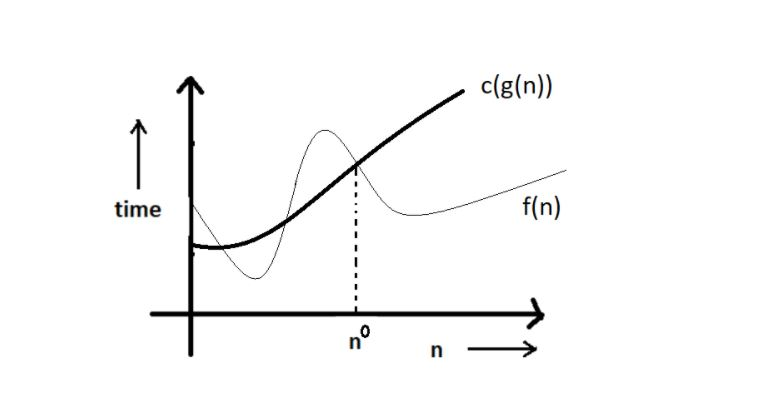
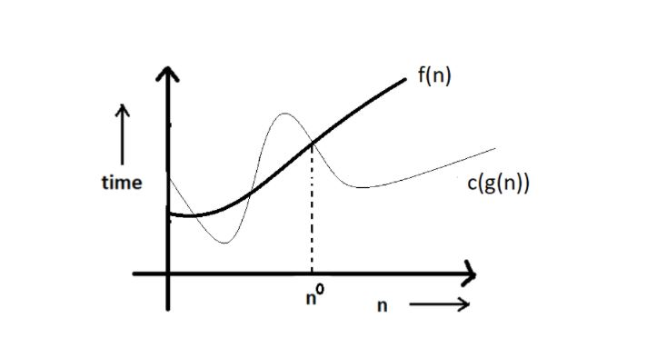
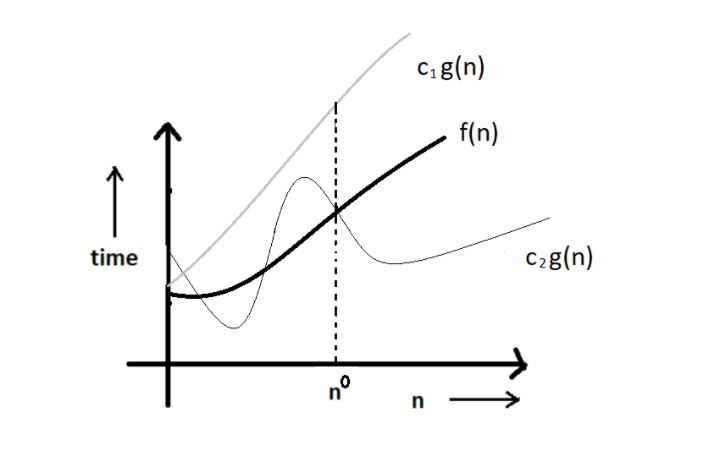

Asymptotic Notations:
Asymptotic notation gives us an idea about how good a given algorithm is compared to some other algorithm.
Primarily there are three types of widely used asymptotic notations.
- Big oh notation (O)
- Big omega notation (Ω)
- Big theta notation (θ)
Big oh notation (O)
- Big oh notation is used to describe an asymptotic upper bound.
- Mathematically, if f(n) describes the running time of an algorithm; f(n) is O(g(n)) if and only if there exist positive constants c and n0 such that:
- 0 ≤ f(n) ≤ c g(n) for all n ≥ n°.
- Here, n is the input size, and g(n) is any complexity function, for , e.g. n, n2, etc. (it is used to give upper bound on a function)
- If a function is O(n), it is automatically O(n2) as well! Because it satisfies the equation given above.
Graphic Example for Big oh (O)

Big Omega (Ω)
- Just like O notation provides an asymptotic upper bound, Ω notation provides an aymptotic lower bound.
- Let f(n) define the running time of an algorithm; f(n) is said to be Ω (g(n)) if and only if there exist positive constant c and n such that :
- 0 ≤ c g(n) ≤ f(n) ∀ n ≥ n0.
- It is used to give the lower bound on a function.
- If a function is Ω (n2) it is automatically Ω (n) as well since it satisfies the abobe equation.
Graphic example for Big Omega (Ω)

Big Theta (θ):
- Let f(n) define the running time of an algorithm.
- F(n) is said to be θ (g(n)) if f(n) is O (g(n)) and f(x) is Ω (g(n)) both.
- Mathematically.
- Merging botht the equations, we get:
- 0 ≤ c2 g(n) ≤ f(n) ≤ c1 g(n) ∀ n ≥ no.
Graphic example of Big theta (θ)

Which one of these to use?
Big theta provides a better pricture of a given algorithm's run time, which is why most interviewers expect you to answer in terms of Big theta when they ask "order of" questions. And what you provide as the answer in Big theta, is already a Big oh and
a Big omega. It is recommended for this reason.